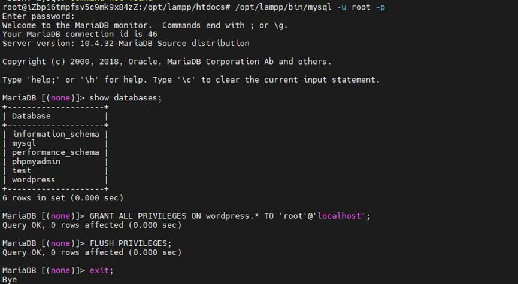
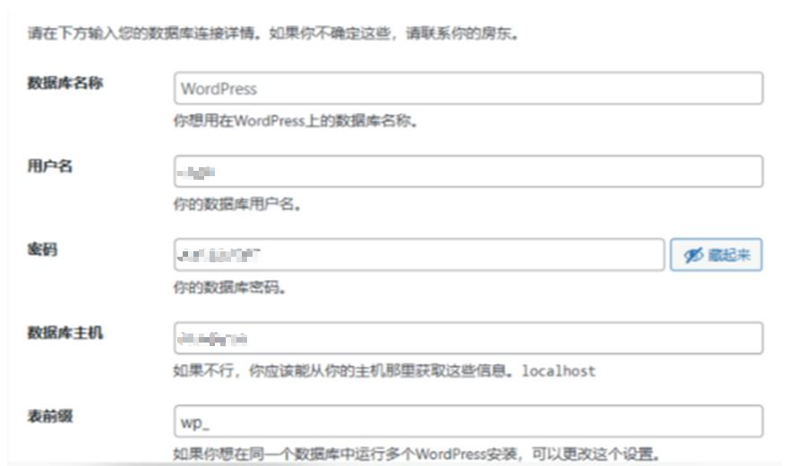
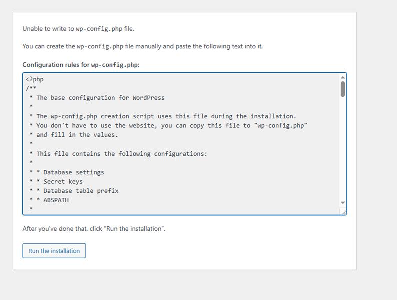
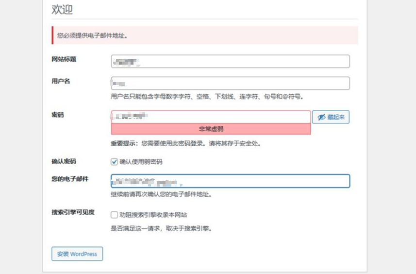
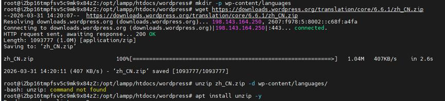
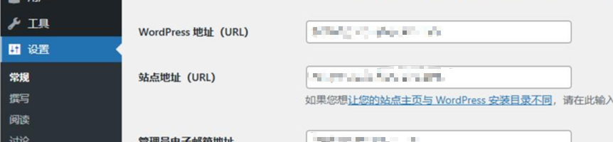
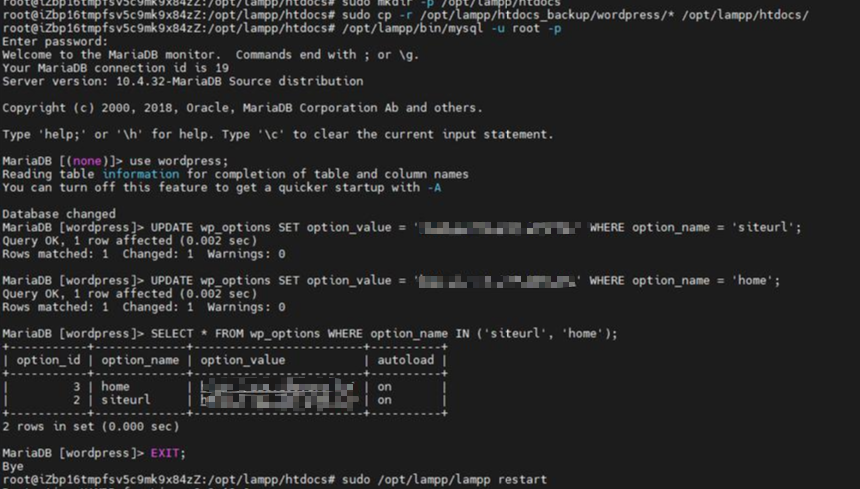

站点程序落地
WordPress 建站
目标
在 XAMPP 环境中完成 WordPress 下载、数据库创建、配置文件处理和后台初始化，让官网程序具备可访问、可管理的基础状态。
1. 下载并解压 WordPress
这一阶段把程序文件放进 XAMPP 的站点目录，形成后续数据库连接和网页初始化的基础目录结构。
cd /opt/lampp/htdocs
wget https://wordpress.org/latest.zip
unzip latest.zip2. 创建数据库并验证可用性
WordPress 依赖数据库保存站点数据，因此需要先在 XAMPP 内置 MySQL 中创建独立数据库，并确认后续连接能够正常使用。为了安全起见，页面中只保留步骤表达，不展示真实口令。
CREATE DATABASE wordpress DEFAULT CHARACTER SET utf8mb4 COLLATE utf8mb4_unicode_ci;
FLUSH PRIVILEGES;

3. 处理 wp-config 配置
手册里既包含通过网页安装向导生成配置的方式，也包含手工复制 wp-config-sample.php 的处理方式。实际运维里，遇到权限或自动生成失败时，手工配置是比较稳妥的兜底方案。
cd /opt/lampp/htdocs/wordpress
cp wp-config-sample.php wp-config.php
vim wp-config.php
wp-config.php。4. 初始化站点后台
完成数据库连接后，继续通过网页安装向导初始化站点标题、后台账号和基础设置。这里展示的是“安装流程已走通”，不放具体账号、密码和邮箱字段。

5. 本地化与中文环境处理
为了方便后续维护和内容录入，又补充了中文语言包，让后台管理界面更贴近日常使用场景。
mkdir -p wp-content/languages
wget https://downloads.wordpress.org/translation/core/6.6.1/zh_CN.zip
unzip zh_CN.zip -d wp-content/languages/
6. 站点根目录与访问地址调整
在基础安装完成后，又继续处理了站点访问路径调整，把默认的 /wordpress 访问路径优化为更直接的站点入口，并同步修改后台地址配置。


siteurl 和 home，确保站点目录调整后仍可正常访问。7. 阶段小结
这一阶段完成后，官网已经不只是“服务装好了”，而是真正进入了程序可访问、后台可管理、后续页面可继续建设的状态。
本阶段成果
完成 WordPress 程序下载、数据库准备、配置文件处理和后台初始化，形成可访问、可登录、可继续维护的官网基础程序环境。